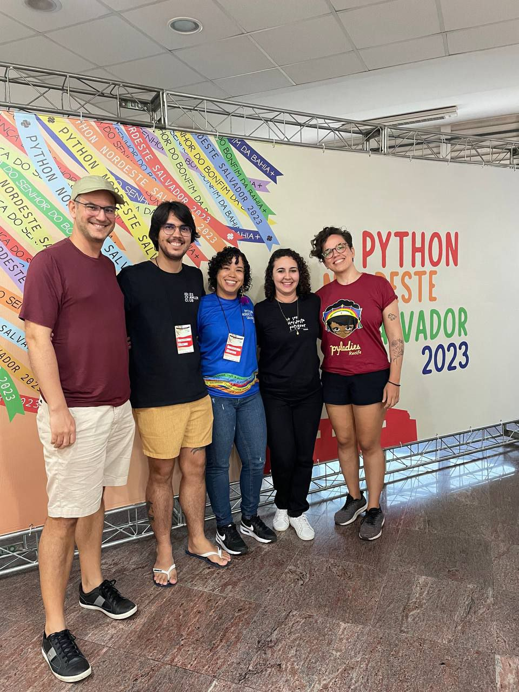
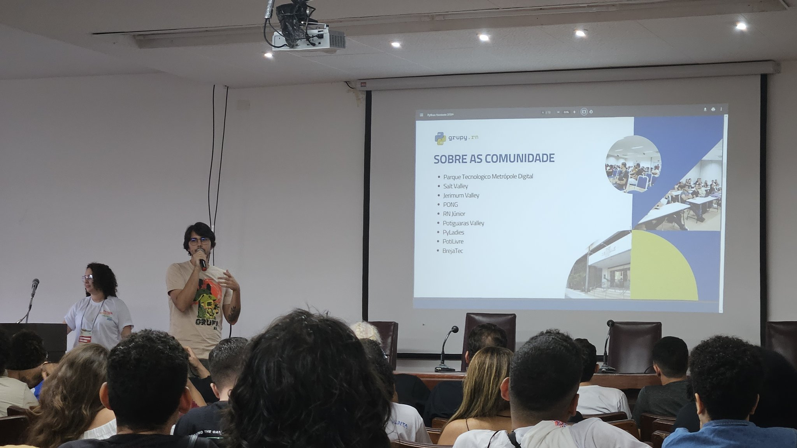

A edição 2023 da Python Nordeste aconteceu na UFBA de Salvador nos dias 22 a 24 de setembro. Três dias coloridos com as fitinhas do Bonfim, imersos em Python & comunidade e finalizados com poesia a galope.
Sexta-feira
Iniciando a tarde, além do credenciamento tivemos uma mesa de abertura “Yabás das Ciências: representações femininas do conhecimento ancestral e científico”, discutindo a representação preta na academia e computação. No fim do dia tivemos a apresentação cultural do grupo Mãos no couro apresentando um samba como nunca vimos.
Sábado
Sábado foi o dia mais cheio de atividades, com dois keynotes. O Matheus Moreira falou sobre dataficação, dataismo & colonialismo digital, discutindo o rastreio de dados, os limites da privacidade e como isso reforça práticas coloniais como o extrativismo predatório (só que dos dados). Já Anicely Santos apresentou a música “A Natureza das coisas” em uma versão só sua, envolvendo todo o processo de comunidade e finalizando com a citação “Quando alguém te dá um punhado de farinha, ela está te dando um futuro”.
Domingo
Tarcizio Silva apresentou um punhado de suas pesquisas com o keynote sobre racismo algoritmico, mostrando como a Inteligência Artificial tem viés e pode reforçar o racismo estrutural. Para encerrar o evento o nosso Humberto declamou sua tradicional Galope a beira-mar.
Além dos keynotes
- Aprendemos que dendê é tão versátil que dá pra fazer até brigadeiro!
- Ouvimos da Dandara que análise de dados é coisa de gente fofoqueira
- Tivemos aula de vogue da Alynne
- E claro que tivemos contribuições de membros do GruPy-RN: a Ryllari organizou a vida de todo mundo com Celery, o Ítalo (estranho falar de mim na terceira pessoa) ensinou a publicar pacotes python com Jupyter notebooks, além da Gabi e Raquel que mostraram o que é feature flags
Tiramos uma foto com algumas das pessoas de Natal que foram pro evento (as demais ou correram pra comer na hora do almoço ou viajaram mais cedo no domingo):

Novidades
Fico muito feliz em anunciar que Natal vai ser a sede da próxima Python Nordeste! São muitas ideias pra uma edição com a cara da cidade e da nossa comunidade. Já estamos planejando a identidade visual, visitando lugares pro próximo evento e já temos até um cronograma inicial pra organizar tudo.
